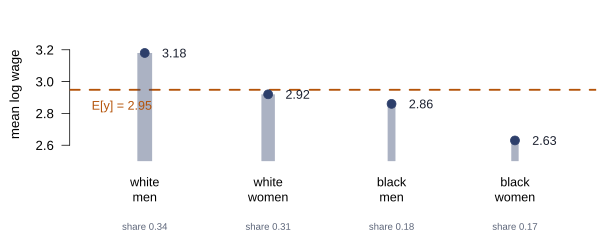
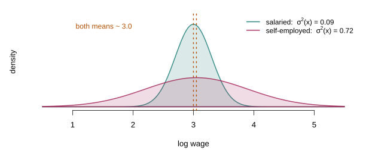
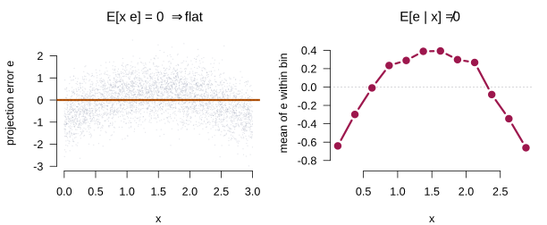

Conditional Expectation, Linear Projection, and the Linear Regression Model
Lecture 2
PIMES/UFPE
Before any model
Where this lecture sits
This lecture answers the first of the three questions, and only that one. By the end we will know under exactly what conditions the parameter of a linear model can be learned from data — and we will not have written down a single estimator. Estimation is Lecture 3; inference waits until Lecture 6.
The question of this lecture
We observe a sample and want to say something about the relationship between \(y\) and \(\mathbf{x}\). The instinct is to write down a model. Resist it for a moment, and ask instead: what can be said before assuming anything at all?
\(\{(y_i, \mathbf{x}_i)\}_{i=1}^n\) are i.i.d. draws from a population distribution \(F\), with \(y_i\) scalar and \(\mathbf{x}_i\) a \(K \times 1\) vector.
That is the entire assumption. No linearity, no exogeneity, no functional form.
Two objects, and why the order matters
It turns out that a joint distribution alone gives us two well-defined objects: the conditional expectation function, which describes the average of \(y\) at each value of \(\mathbf{x}\), and the linear projection, which is the best straight-line summary of that relationship. Neither requires a model. Both exist as soon as a few moments are finite.
Only afterwards do we impose the linear regression model — and the model turns out to be precisely the assumption that these two objects coincide.
The conditional expectation function
What we actually want to know
The interest is always conditional. Start with a single binary indicator.

Figure 1: Log wages for two groups. The dashed segments mark the group means — and that pair of numbers is the conditional expectation function.
The definition
Definition 1 (Conditional expectation function) The conditional expectation function (CEF) is \[m(\mathbf{x}) = \E[y \mid \mathbf{x}],\] the mean of \(y\) in the subpopulation with covariates equal to \(\mathbf{x}\). It exists whenever \(\E|y| < \infty\), and involves no modelling assumption whatever.
With one binary regressor, \(m\) takes two values. With two binary regressors it takes four. As the conditioning becomes finer the CEF becomes a richer object — and with a continuous regressor it becomes a curve.
More groups, same idea

Figure 2: Mean log wage in four groups defined by sex and race; stem width is proportional to the group’s population share. The dashed line is the unconditional mean. Note the vertical axis does not start at zero.
The law of iterated expectations, read off the figure
The dashed line is the unconditional mean, and it is not the average of the four bars. It is their average weighted by the group shares:
\[\E[y] \;=\; \sum_{g} \Prob(\text{group } g)\; \E[y \mid \text{group } g]\]
which is exactly the law of iterated expectations, \(\E[y] = \E\big[\E[y \mid \mathbf{x}]\big]\). The outer expectation averages the group means over the distribution of the groups.
The CEF error
Whatever \(m\) is, we can define the deviation of \(y\) from it: write \(\varepsilon = y - m(\mathbf{x})\), so that \(y = m(\mathbf{x}) + \varepsilon\).
Theorem 1 (Properties of the CEF error)
- \(\E[\varepsilon \mid \mathbf{x}] = 0\)
- \(\E[\varepsilon] = 0\)
- \(\E[h(\mathbf{x})\,\varepsilon] = 0\) for any \(h\) with \(\E|h(\mathbf{x})\varepsilon| < \infty\)
Proof.
- holds because \(m(\mathbf{x})\) is a function of \(\mathbf{x}\), so it passes through the conditional expectation. (2) is (1) plus the law of iterated expectations. (3) follows by conditioning on \(\mathbf{x}\) first, which reduces the expression to \(\E[h(\mathbf{x}) \cdot 0]\). \(\square\)
Nothing here has been assumed
Read the theorem again and notice what it is not. The equation \(y = m(\mathbf{x}) + \varepsilon\) with \(\E[\varepsilon \mid \mathbf{x}] = 0\) holds by construction, for any joint distribution with a finite mean. It has no empirical content: nothing has been assumed, and consequently nothing can be tested.
Why the mean, and not something else?
The choice of the conditional mean can look arbitrary. There is a precise answer: among all functions of \(\mathbf{x}\), the CEF predicts \(y\) best under squared loss.
Theorem 2 (The CEF minimises mean squared error) Among all \(g\) with \(\E[g(\mathbf{x})^2] < \infty\), \[m(\mathbf{x}) = \argmin_{g} \E\big[(y - g(\mathbf{x}))^2\big].\]
Proof. Add and subtract \(m(\mathbf{x})\) inside the square. The cross term vanishes by Theorem 1(3), since \(m - g\) is a function of \(\mathbf{x}\), leaving \[\E\big[(y - g(\mathbf{x}))^2\big] = \E[\varepsilon^2] + \E\big[(m(\mathbf{x}) - g(\mathbf{x}))^2\big] \ge \E[\varepsilon^2],\] with equality only when \(g\) and \(m\) agree as functions of \(\mathbf{x}\).1 \(\square\)
What separates this from an estimator
The CEF minimises over an entire function — infinitely many unknowns, more than any sample can identify.
Least squares makes two substitutions:
- population expectation \(\to\) sample average
- all functions \(\to\) linear functions
What remains is a problem in \(K\) numbers.
Those two substitutions are the whole distance between the population object and the estimator. Keep them in view: much of the course consists of asking what each one costs.
Conditional variance
The mean is not the only thing that moves
The CEF records the centre of each conditional distribution and discards everything else. Some of what it discards matters.

Figure 3: Two groups with essentially the same conditional mean and very different conditional variance. The CEF cannot tell them apart.
Definition 2 (Conditional variance) The conditional variance of the error is \[\sigma^2(\mathbf{x}) = \Var[\varepsilon \mid \mathbf{x}] = \E[\varepsilon^2 \mid \mathbf{x}],\] the second equality holding because \(\E[\varepsilon \mid \mathbf{x}] = 0\) by construction.
Conditional and unconditional are different objects
The unconditional variance \(\sigma^2 = \E[\varepsilon^2]\) is a single number. The conditional variance \(\sigma^2(\mathbf{x})\) is a function. They are linked, again, by iterated expectations:
\[\sigma^2 \;=\; \E\big[\sigma^2(\mathbf{x})\big]\]
so the unconditional variance is the average of the conditional ones. Knowing \(\sigma^2\) tells you nothing about how the spread varies across groups — exactly as knowing \(\E[y]\) told you nothing about the four group means.
Definition 3 (Homoskedasticity and heteroskedasticity) The error is homoskedastic if \(\sigma^2(\mathbf{x}) = \sigma^2\) does not depend on \(\mathbf{x}\), and heteroskedastic otherwise.
Which case is the exception?
Important
Textbooks often present homoskedasticity as part of a correct specification and heteroskedasticity as a deviation from it. That is backwards.
Heteroskedasticity is the generic case; homoskedasticity is unusual and exceptional. The default in empirical work should be to assume the errors are heteroskedastic, not the converse.
When the CEF is linear
The convenient special case
We have a target, \(m(\mathbf{x})\), and no way to estimate a whole function. The obvious question is when \(m\) happens to be simple enough to estimate.
Definition 4 (Linear CEF) The CEF is linear if \[m(\mathbf{x}) = \E[y \mid \mathbf{x}] = \mathbf{x}'\bbeta\] for some \(K\)-vector \(\bbeta\), where \(\mathbf{x}\) ordinarily includes a constant.
When this holds, the object we wanted is described by \(K\) numbers, and estimating it becomes feasible. Everything the rest of the course does to the linear model rests on this being either true or a good enough approximation.
Linearity is less restrictive than it looks
With discrete regressors it is not an assumption at all. Take the four groups of Figure 2 and include a constant plus three dummies. Four parameters, four group means: the linear CEF fits them exactly, whatever the numbers happen to be. A saturated regression on dummies is always a linear CEF.
Linear in parameters, not in variables. \(\mathbf{x}\) may contain \(x^2\), \(\log x\), interactions or splines. Writing \(m(x) = \beta_1 + \beta_2 x + \beta_3 x^2\) is a linear CEF in a nonlinear function of \(x\) — and by adding terms one can approximate a curve as closely as desired.
And when it is not linear?
Nothing guarantees the CEF is linear, and with continuous regressors it usually is not. The question becomes: if we insist on a linear function anyway, which one do we get, and does it mean anything?
The answer is the object that occupies the rest of this lecture.
Linear projection
The best linear approximation
Definition 5 (Linear projection) Suppose \(\E[y^2] < \infty\), \(\E\|\mathbf{x}\|^2 < \infty\), and \(\bQ_{xx} = \E[\mathbf{x}\mathbf{x}']\) is nonsingular. The linear projection coefficient is \[\bbeta = \argmin_{\mathbf{b}} \E\big[(y - \mathbf{x}'\mathbf{b})^2\big],\] and the linear projection of \(y\) on \(\mathbf{x}\) is \(\mathbf{x}'\bbeta\).
Note what changed from Theorem 2: the minimisation is no longer over all functions \(g\), but over the \(K\)-vectors \(\mathbf{b}\). That is the second of the two substitutions from earlier — and it is what makes a closed form possible.
The closed form
Theorem 3 (The projection coefficient) Under the conditions of Definition 5, \[\bbeta = \bQ_{xx}^{-1}\,\E[\mathbf{x}y].\]
Proof. The criterion is a quadratic form in \(\mathbf{b}\); its first-order condition is \(-2\E[\mathbf{x}y] + 2\bQ_{xx}\mathbf{b} = \bzero\), which has a unique solution because \(\bQ_{xx}\) is nonsingular, and is a minimum because \(2\bQ_{xx}\) is positive definite. \(\square\)
You can always project
Look at what Definition 5 requires: two finite moments and no exact collinearity. It does not require the CEF to be linear. It does not require the model to be “true”, or indeed for there to be a model at all.
Writing \(e = y - \mathbf{x}'\bbeta\) for the projection error, the first-order condition says precisely that \[\E[\mathbf{x}e] = \bzero.\]
A small equation with a long future
\(\E[\mathbf{x}e] = \bzero\) is a moment condition — a statement that some function of the data and the parameter has mean zero. Follow it forward:
- Lecture 3 — its sample analogue \(\bX'\be = \bzero\) drops out of least squares algebra
- Lecture 10 — the regressor is replaced by an instrument, giving \(\E[\mathbf{z}e] = \bzero\)
- Lecture 12 — it generalises to \(\E[g(W,\btheta)] = \bzero\), which is GMM
The projection error is not the CEF error
Both \(\varepsilon\) and \(e\) are “errors”, both have mean zero, and it is tempting to treat them as the same object. They are not, and the difference is the whole content of the linearity assumption.
The projection error satisfies \(\E[\mathbf{x}e] = \bzero\): it is uncorrelated with \(\mathbf{x}\), by construction. The CEF error satisfies the much stronger \(\E[\varepsilon \mid \mathbf{x}] = 0\): it is mean-independent of \(\mathbf{x}\). Correlation zero does not imply conditional mean zero.
When the CEF is linear the two coincide. When it is not, the projection is still perfectly well defined — it is simply the best linear approximation, and its error is correlated with nonlinear functions of \(\mathbf{x}\) even though it is uncorrelated with \(\mathbf{x}\) itself.
Seeing the gap
The figure below makes the distinction concrete. The true CEF is quadratic; the projection is the best line through it.

Figure 4: A nonlinear CEF (solid) and its linear projection (dashed).
The two statements, side by side

Figure 5: Left: the projection error against \(x\) — the fitted line is exactly flat, so the correlation is zero. Right: the same errors averaged within bins of \(x\) — clearly not zero.
Same errors, both panels. The left says the projection did its job; the right says the linear model is wrong. Neither contradicts the other.
The linear regression model
Where the assumptions come from
Everything to this point has been definitional. The CEF exists whenever \(y\) has a mean; the projection exists whenever two moments are finite; the decomposition \(y = m(\mathbf{x}) + \varepsilon\) with \(\E[\varepsilon \mid \mathbf{x}] = 0\) holds by construction. No claim about the world has been made, and none could be refuted.
The linear regression model is what we get by imposing restrictions on the objects already defined. Each of Greene’s numbered assumptions restricts one of them — which is why they can look like a list, and why they are not.
| Assumption | Restricts |
|---|---|
| A1 Linearity | the shape of \(m(\mathbf{x})\) |
| A2 Full rank | \(\bQ_{xx}\), hence identification |
| A3 Exogeneity | \(\varepsilon\), not just its correlation |
| A4 Sphericality | \(\sigma^2(\mathbf{x})\) |
| A6 Normality | the whole conditional distribution |
A1 · Linearity
Assumption A1. \(m(\mathbf{x}) = \E[y \mid \mathbf{x}] = \mathbf{x}'\bbeta\), so that \(y_i = \mathbf{x}_i'\bbeta + \varepsilon_i\) with \(\E[\varepsilon_i \mid \mathbf{x}_i] = 0\).
This is Definition 4, no more and no less. Under A1 the projection coefficient and the CEF coefficient are the same vector, and \(\bbeta\) finally means what we want it to mean: a derivative of the conditional mean, not a slope of an approximating line.
Linearity is in the parameters, as before: \(x^2\), \(\log x\) and interactions are all allowed.
Matrix form and notation
Each observation reads \(y_i = \mathbf{x}_i'\bbeta + \varepsilon_i\), and stacking the \(n\) of them gives the form used for the rest of the course:
\[\underset{n \times 1}{\bY} = \underset{n \times K}{\bX}\;\underset{K \times 1}{\bbeta} + \underset{n \times 1}{\beps}\]
Throughout, boldface \(\mathbf{x}\) denotes a column or a row of \(\bX\); subscript \(k\) indexes columns, meaning variables, and \(i\) indexes rows, meaning observations.
A2 · Full rank, and why it is about identification
Assumption A2. The columns of \(\bX\) are linearly independent, and \(n \ge K\).
Equivalently \(\rank(\bX) = K\), which guarantees \(\bX'\bX\) is invertible. This is the sample counterpart of the condition already required in Definition 5: \(\bQ_{xx}\) nonsingular. It is easy to read it as a technical convenience that makes a formula work. It is not.
Important
If A2 fails, distinct values of \(\bbeta\) produce identical distributions of the observables. No estimator can tell them apart, at any sample size. This is an identification failure, not a computational one.
What that looks like
Example 1 (An unestimable model) \[\ln \text{Price} = \beta_1 \ln \text{Size} + \beta_2 \ln \text{AspectRatio} + \beta_3 \ln \text{Height} + \varepsilon\]
with \(\text{Size} = W \times H\) and \(\text{AspectRatio} = W/H\). Then \(\ln\text{Size} = \ln W + \ln H\) and \(\ln\text{AspectRatio} = \ln W - \ln H\), so \[\ln\text{Size} - \ln\text{AspectRatio} - 2\ln H = 0\] exactly. The three regressors are collinear, each \(\beta_k\) is meaningless on its own, and only certain linear combinations are identified.
A3 · Exogeneity
Assumption A3. \(\E[\beps \mid \bX] = \bzero\).
We have met this too. The projection error satisfies \(\E[\mathbf{x}e] = \bzero\) by construction; the CEF error satisfies the stronger \(\E[\varepsilon \mid \mathbf{x}] = 0\) by construction. Assuming A3 for the linear model is assuming that the error of the linear specification behaves like a CEF error — which is exactly the same content as A1.
Where exogeneity fails
Example 2 (Omitted variables) Suppose the DGP is \(\text{Income} = \gamma_1 + \gamma_2\,\text{educ} + \gamma_3\,\text{age} + u\) but we estimate \(\text{Income} = \gamma_1 + \gamma_2\,\text{educ} + \varepsilon\).
Then \(\varepsilon = \gamma_3\,\text{age} + u\), so \(\E[\varepsilon \mid \text{educ}] = \gamma_3\,\E[\text{age} \mid \text{educ}] \neq 0\) whenever age and education are related.
A3 fails here, and the failure is not a technicality: it is omitted variable bias, which we derive properly in Lecture 4 and spend Lectures 10 and 11 learning to repair.
A4 · A restriction we will mostly decline to impose
Assumption A4. \(\E[\beps\beps' \mid \bX] = \sigma^2\bI_n\), which packs two claims together: homoskedasticity, \(\sigma^2(\mathbf{x}_i) = \sigma^2\) for every \(i\), and no autocorrelation, \(\Cov[\varepsilon_i,\varepsilon_j \mid \bX] = 0\) for \(i \neq j\).
The first half is Definition 3, and the argument made there applies here in full: constant conditional variance is the exceptional case, not the normal one. A4 is therefore listed for completeness and because the classical results are stated under it — not because we expect it to hold.
Important
A4 buys efficiency and a simpler variance formula. It buys nothing for unbiasedness or consistency.
Accordingly, Lecture 4 derives the variance of least squares under general heteroskedasticity and obtains \(\sigma^2(\bX'\bX)^{-1}\) as the special case A4 produces. Robust standard errors are the default, not a repair.
A5 and A6
Assumption A5. \(\bX\) may be fixed or random. Fixed \(\bX\) describes experimental designs where the researcher sets the covariates; random \(\bX\) describes observational data, the usual case in economics. Some columns may be fixed while others are random — time trends and period indicators, for instance.
Assumption A6 (Normality). \(\beps \mid \bX \sim \Normal(\bzero, \sigma^2\bI_n)\). Note how far this goes: A1 restricted the conditional mean, A4 the conditional variance, and A6 restricts the entire conditional distribution. It delivers exact finite-sample distributions for test statistics, and it is the one assumption we will largely discard — the central limit theorem takes over in Lecture 5.
What each assumption buys
| Restricts | Buys | Relaxed in | |
|---|---|---|---|
| A1 Linearity | shape of \(m(\mathbf{x})\) | Makes \(\bbeta\) a CEF coefficient | Lectures 13–14 |
| A2 Full rank | \(\bQ_{xx}\) | Identification; \((\bX'\bX)^{-1}\) exists | Lecture 3 |
| A3 Exogeneity | \(\varepsilon\) given \(\mathbf{x}\) | Unbiasedness, consistency | Lectures 10–11 |
| A4 Sphericality | \(\sigma^2(\mathbf{x})\) | Efficiency, conventional errors | Lectures 4, 7, 16 |
| A5 Random \(\bX\) | — | Generality | — |
| A6 Normality | whole distribution | Exact finite-sample inference | Lecture 5 |
Read the right-hand column: it is the syllabus for the rest of the course, written as a list of restrictions to be removed one at a time.
Identification, before estimation
Putting the pieces together
We now have everything needed to answer the first of the three questions from Lecture 1, and notice that we have not yet written down a single estimator.
The parameter \(\bbeta\) is a functional of the population moments, \(\bbeta = \bQ_{xx}^{-1}\E[\mathbf{x}y]\). It is therefore determined by \(F\) alone — provided \(\bQ_{xx}\) can be inverted. A2 delivers exactly that: given A2, no two values of \(\bbeta\) generate the same joint distribution, and the parameter is identified.
Two assumptions, two jobs
A3 does a separate job. It makes that identified coefficient the conditional expectation function, rather than merely the best linear approximation to it.
Important
A2 identifies \(\bbeta\). A3 makes \(\bbeta\) the thing we wanted.
Two different jobs, failing for two different reasons, repaired by two different techniques.
Estimation is next lecture — and, as we will see, it is by some distance the easier problem.
Reading
Sources
| Hansen | Chapter 2 — the CEF, conditional variance, linear CEF and projection, in this order |
| Greene | Chapter 2 — assumptions A1–A6 and the examples |